mono-white.svgOne colour, white: photos and coloured backgrounds.
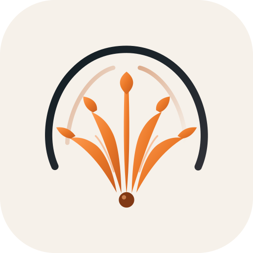
icon-light.svgSquare app icon, paper tile.
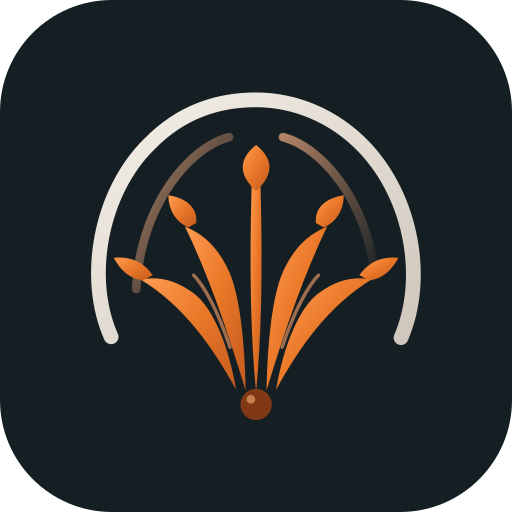
icon-dark.svgSquare app icon, dark tile.
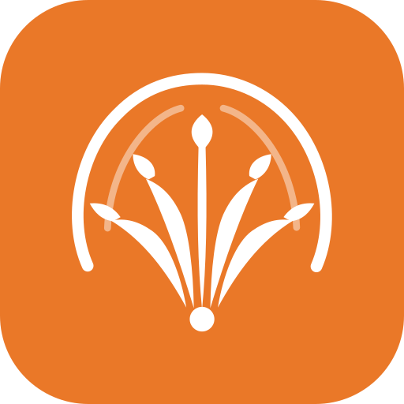
icon-orange.svgSquare app icon, orange tile (#EA7828), white mark.
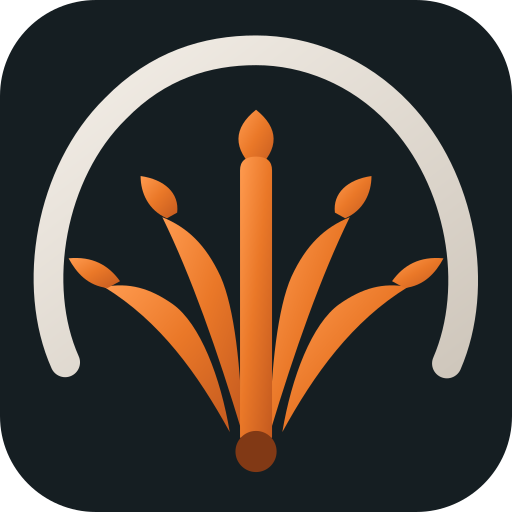
favicon.svgBrowser icon: dark tile, heavier strokes, no fine detail, for 16 and 32 px.
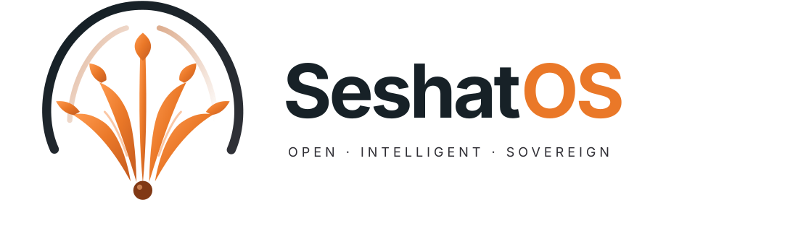
lockup-on-light.svgMark and name, horizontal, on a light background.
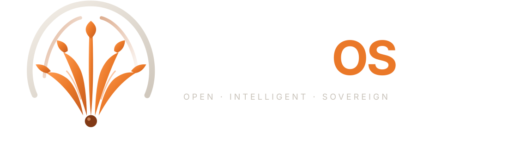
lockup-on-dark.svgMark and name, horizontal, on a dark background.
SeshatCloud
The multi-tenant product: the flower under a cloud.
mark-on-light.svgThe mark on a light background.mark-on-dark.svgThe mark on a dark background.mono-black.svgOne colour, black: documents, stamps, print.mono-white.svgOne colour, white: photos and coloured backgrounds.
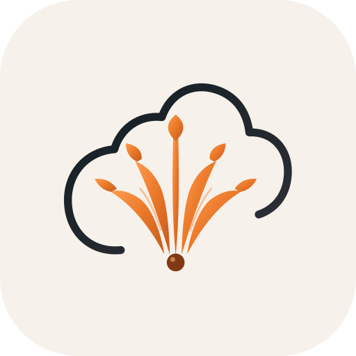
icon-light.svgSquare app icon, paper tile.
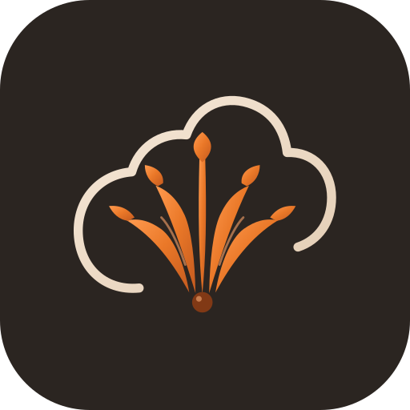
icon-dark.svgSquare app icon, dark tile.
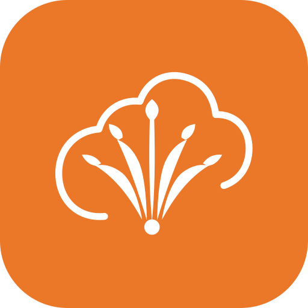
icon-orange.svgSquare app icon, orange tile (#EA7828), white mark.
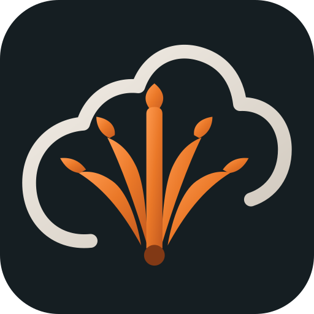
favicon.svgBrowser icon: dark tile, heavier strokes, no fine detail, for 16 and 32 px.lockup-on-light.svgMark and name, horizontal, on a light background.lockup-on-dark.svgMark and name, horizontal, on a dark background.
Seshat Runtime
The open-source agent runtime: the flower rising from a stacked slab.
mono-white.svgOne colour, white: photos and coloured backgrounds.
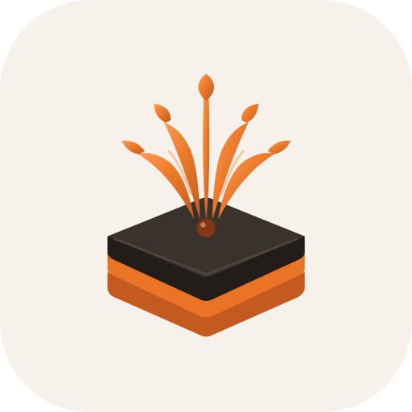
icon-light.svgSquare app icon, paper tile.
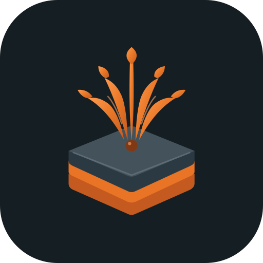
icon-dark.svgSquare app icon, dark tile.icon-orange.svgSquare app icon, orange tile (#EA7828), white mark.
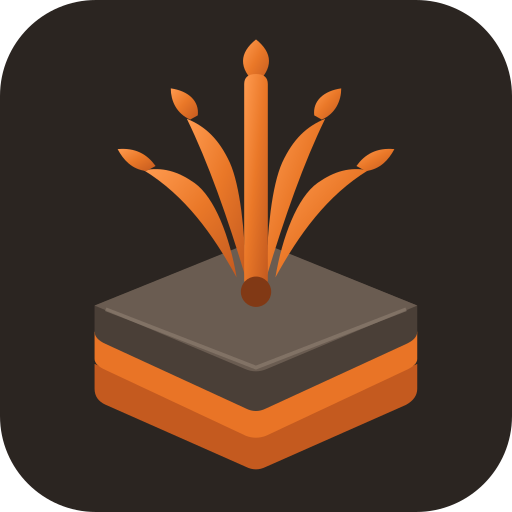
favicon.svgBrowser icon: dark tile, heavier strokes, no fine detail, for 16 and 32 px.
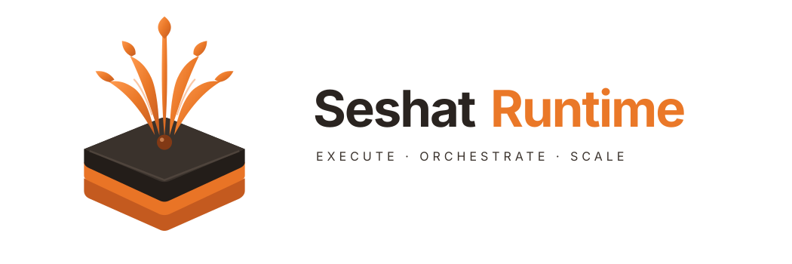
lockup-on-light.svgMark and name, horizontal, on a light background.
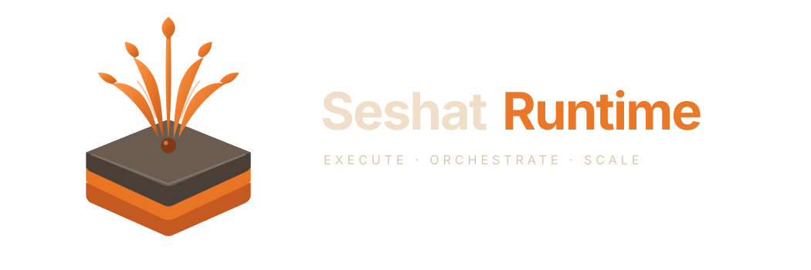
lockup-on-dark.svgMark and name, horizontal, on a dark background.
SeshatOS Knowledge
The knowledge app: an open book carrying a tree of nodes.
mark-on-light.svgThe mark on a light background.mark-on-dark.svgThe mark on a dark background.mono-black.svgOne colour, black: documents, stamps, print.mono-white.svgOne colour, white: photos and coloured backgrounds.icon-light.svgSquare app icon, paper tile.icon-dark.svgSquare app icon, dark tile.icon-orange.svgSquare app icon, orange tile (#EA7828), white mark.favicon.svgBrowser icon: dark tile, heavier strokes, no fine detail, for 16 and 32 px.lockup-on-light.svgMark and name, horizontal, on a light background.lockup-on-dark.svgMark and name, horizontal, on a dark background.
SeshatOS Automation
The automation app: a circuit fan. Reconstructed from the brand board.